模块简介
媒体页面主要分为管理任务版本媒体，审核播放列表，客户审核列表三块。
■ 版本库：当前项目任务版本媒体
■ 播放列表：管理当前创建的版本审核列表
■ 客户审核：管理客户审核意见
页面预览
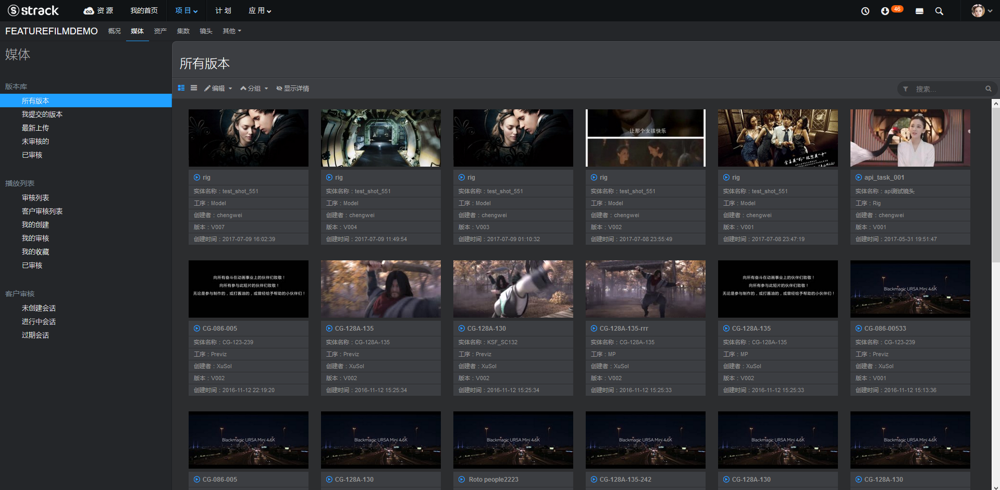
版本库
这里记录版本所附带的媒体，当前能在线审核的媒体类型为图片和视频。
1. 列表视图操作方式
■ 鼠标左键单选
■ ctrl+鼠标左键挑选
■ shift+鼠标左键区域选择
■ 鼠标框选
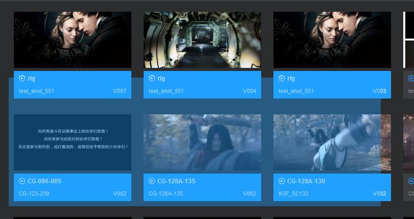
2. 数据表格视图操作方式
■ 鼠标左键单选
■ ctrl+鼠标左键挑选
■ shift+鼠标左键区域选择
■ 鼠标拖拽多选
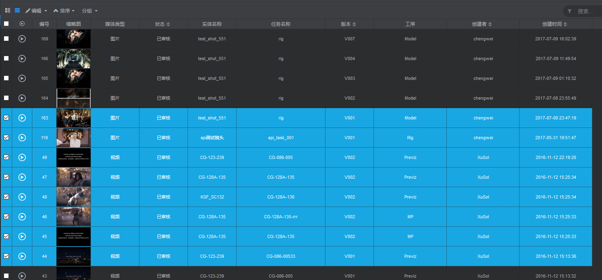
3. 添加审核播放列表
选择一个以上待审核版本，点击编辑 -> 添加播放列表。
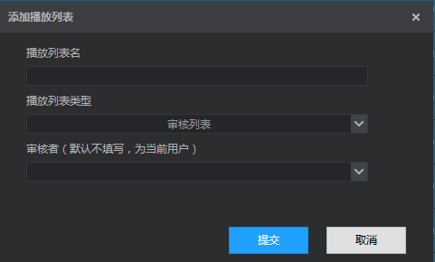
■ 播放列表名称
■ 播放列表类型：审核列表，客户审核列表
■ 审核者：当前播放列表所属审核者
审核列表：
此列表为内部审核列表，提供给组长或者总监审核。
客户审核列表：
此列表为客户审核列表，提供导演或者客户审核。
4. 标记已审核
选择一个获取多个版本，点击 编辑->标记已审核 ，更改版本审核状态为已审核。
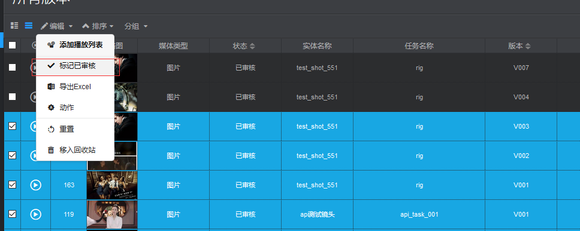
5. 数据表格视图导出Excel操作
详情参考Excel章节，根据当前页面过滤条件导出Excel，点击 编辑->导出Excel
6. 打开版本动作列表
具体操作请看动作介绍章节。
7. 重置当前页面设置
8. 移入回车站
删除选择一个或者多个版本。
9. 排序、分组
审核列表
这里包括内部审核列表和客户审核列表管理。审核列表管理分为三列：第一列为显示审核列表，可以过滤选择；第二列为当前选中播放列表重审核版本列表，允许删除、增加、排序；第三列显示选中审核版本详细信息。
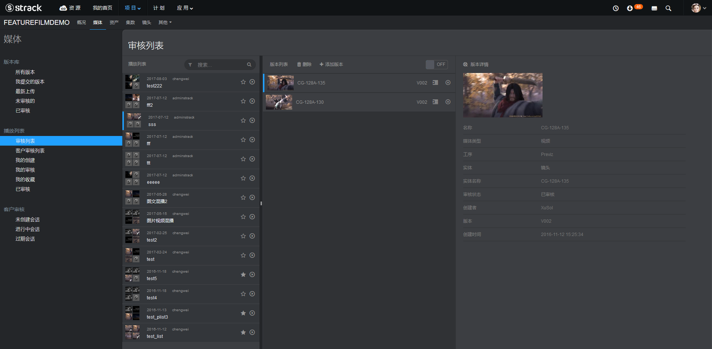
1. 收藏审核列表
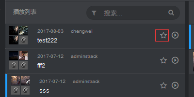
2. 点击播放当前审核列表
后天预览设置可以设置是否直接跳转到webplayer审核页面
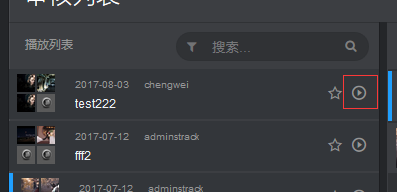
3. 给当前审核列表增加审核版本
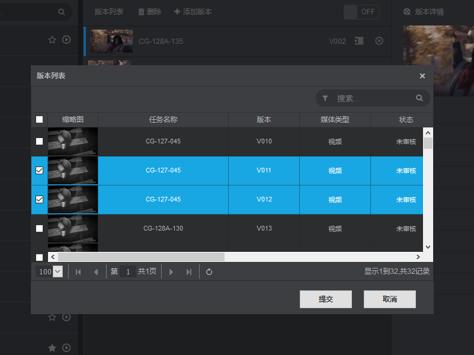
4. 排序当前审核列表
点开中间栏右上角拖拽开关，启用审核列表排序功能。
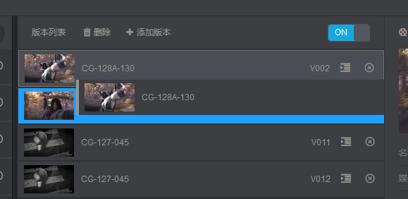
5. 删除当前审核列表
客户审核
客户审核管理模块，需要系统能被外网所访问。给指定客户审核播放列表生成一个会话发送给指定的客户，而客户则不需要登录到当前系统，就能对所需要他审核的内容进行反馈。客户反馈内容不会直接显示到制作人员note下面，制片人或者协调需要进行筛选后发布，对于不合理的需求按照自己公司原则自行处理。
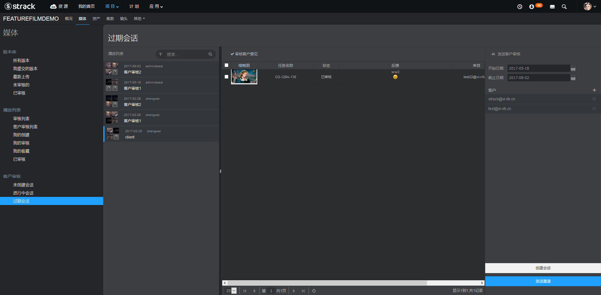
1.客户审核列表
左侧客户审核列表，需要先在版本库页面添加客户审核列表。
2.创建会话
选中一个客户审核列表，选择会话有效时间范围，点击创建会话。
已经创建了无需重复创建会话
3.发送给客户审核
添加客户邮箱，点击发送邀请则会把加密地址以邮件形式发送给客户，如果当前邮件系统不支持外网发送，则可以复制弹出框地址信息再手动发送给客户。
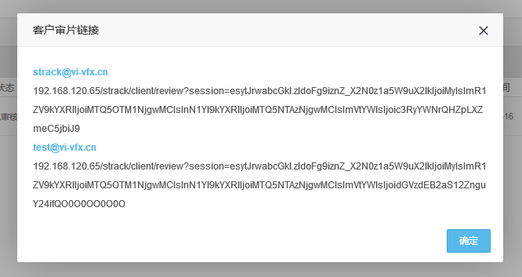
4.审核客户意见
在中间表格面板显示所有客户审核反馈意见，制片人或者相关负责人进行审核，通过审核的意见可以选择勾选，点击工具栏“审核客户意见”按钮进行发布给制作人员。
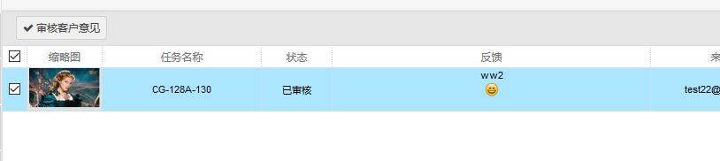